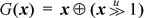

1. The following is pretty accurate:
If e2 is not present in the for loop, the constant 1 is used for it in the above expansion (which would then be a
nonterminating loop, unless something in statement terminates it).
Expressing a for loop in terms of a do loop is somewhat awkward, because the body of a do loop is always executed at least once, whereas the body of a for loop may not be executed at all, depending on e1 and e2. Nevertheless, the for loop can be expressed as follows.
Again, if e2 is not present in the for loop, then use 1 for it above.
2. If your code is
for (i = 0; i <= 0xFFFFFFFF; i++) {...}
then you have an infinite loop. A loop that works is
i = 0xFFFFFFFF;
do {i = i + 1;...} while (i < 0xFFFFFFFF);
3. The text mentions multiply, which for 32 × 32 ==< 64-bit multiplication needs two output registers.
It also mentions divide. The usual implementation of this instruction produces a remainder as well as the quotient, and execution time would be saved in many programs if both results were available.
Actually, the most natural machine division operation takes a doubleword dividend, a single word divisor, and produces a quotient and remainder. This uses three source registers and two targets.
Indexed store instructions use three source registers: the register being stored, the base register, and the index register.
To efficiently deal with bit fields in a register, many machines provide extract and insert instructions. The general form of extract needs three sources and one target. The source registers are the register that contains the field being extracted, a starting bit number, and an ending bit number or length. The result is right justified and either zero- or sign-extended and placed in the target register. Some machines provide this instruction only in the form in which the field length is an immediate quantity, which is a reasonable compromise because that is the common case.
The general insert instruction reads four source registers and writes one target register. As commonly implemented, the sources are a register that contains the source bits to be inserted in the target (these come from the low-order end of the source register), the starting bit position in the target, and the length. In addition to reading these three registers, the instruction must read the target register, combine it with the bits to be inserted, and write the result to the target register. As in the case of extract, the field length may be an immediate quantity, in which case the instruction does three register reads and one write.
Some machines provide a family of select instructions:
SELcc RT,RA,RB,RC
Register RC is tested, and if it satisfies the condition specified in the opcode (shown
as cc, which may be EQ, GT, GE, etc.), then RA is selected; otherwise, RB is selected. The selected register is
copied to the target.
Although not common, a plausible instruction is bit select, or multiplex:
MUX RT,RA,RB,RC
Here RC contains a mask. Wherever the mask is 1, the corresponding bit of RA is selected, and wherever it is 0, the corresponding bit of RB is selected. That is, it performs the operation
RT <-- RA & RC | RB & ~RC
Shift right/left double: A sometimes useful instruction is
SHLD RT,RA,RB,RC
This concatenates RA and RB, treating them as a double-length register, and shifts them left (or right) by an amount given by RC. RT gets the part of the result that has bits from RA and RB. These instructions are useful in “bignum” arithmetic and in more mundane situations.
In signal processing and other applications, it is helpful to have an instruction that computes A*B + C. This applies to both integer and floating-point data.
Of course, there are load multiple and store multiple, which require many register reads or writes. Although many RISCs have them, they are not usually considered to be RISC instructions.
1. (Derivation by David de Kloet) Clearly the body of the while-loop is executed a number of times equal to the number of trailing 0’s in x. The k 1-bits partition the n-bit word into k + 1 segments, each containing 0 or more 0-bits. The number of 0’s in each word is n-k. If N is the number of words , but that need not concern us here), then the total number of 0’s in all the words is N(n – k). By symmetry, the number of 0’s in any segment, summed over all N words, is the same, and is therefore equal to N(n – k)/(k + 1). Thus, the average number of 0’s in any segment is (n-k)/(k+1), and this applies to the last segment, which is the number of trailing 0’s.
As an example, if n = 32 and k = 3, then the while-loop is executed 7.25 times, on average. On many machines the while-loop can be implemented in as few as three instructions (and, shift right, and conditional branch), which might take as few as four cycles. With these parameters, the while-loop takes 4•7.25 = 29 cycles on average. This is less than the divide time on most 32-bit machines, resulting in de Kloet’s algorithm being faster than Gosper’s. For larger values of k, de Kloet’s is still more favorable.
2. The and with 1 makes the shift amount independent of all bits of x except for its rightmost bit. Therefore, by looking at only the rightmost bit of the shift amount, one can ascertain whether the result is x or x << 1. Since both x and x << 1 are right-to-left computable, choosing one of these based on a rightmost bit is also. The function x << (x & 2), incidentally, is not right-to-left computable. But (x & -2) << (x & 2) is.
Another example is the function xn, where we take x0 to be 1. This is not right-to-left computable because if x is even, then the rightmost bit of the result depends upon whether or not x = 0, and thus is a function of bits to the left of the rightmost position. But if it were known a priori that the variable n is either 0 or 1, then xn is right-to-left computable. Similarly, xn&1 is right-to-left computable, for example, by
Notice that xn is like the left shift function in that xn is right-to-left computable for any particular value of n, or if n is a variable restricted to the values 0 and 1, but not if n is an unrestricted variable.
3. A somewhat obvious formula for addition is given on page 16, item (g):
x + y = (x ⊕ y) +2(x & y).
Dividing each side by 2 gives Dietz’s formula. The addition in Dietz’s formula cannot overflow because the average of two representable integers is representable.
Notice that if we start with item (i) on page 16, we obtain the formula given in the text for the ceiling average of two unsigned integers.
4. Compute the floor average of a and b, and also of c and d, using Dietz’s formula. Then compute the floor average of x and y, and apply a correction:
The correction step is really four operations, not the seven that it appears to be, because the exclusive or terms were calculated earlier. It was arrived at by the following reasoning: The computed value of x can be lower than the true (real number) average by 1/2, and this error occurs if a is odd and b is even, or vice versa. This error amounts to 1/4 after x and y are averaged. If this were the only truncation error, the first value computed for r would be correct, because in this case the true average is an integer plus 1/4, and we want the floor average, so we want to discard the 1/4 anyway. Similarly, the truncation in computing y can make the computed average lower than the true average by 1/4. The first computed value of r can be lower than the true average of x and y by 1/2. These errors accumulate. If they sum to an error less than 1, they can be ignored, because we want to discard the fractional part of the true average anyway. But if all three errors occur, they sum to 1 / 4 + 1 / 4 + 1 / 2 = 1, which must be corrected by adding 1 to r. The last line does this: if one of a and b is odd, and one of c and d is odd, and one of x and y is odd, then we want to add 1, which the last line does.
5. The expression for to be simplified is
(¬x | y) & ((x ⊕ y) | ¬(y – x)).
Only bit 31 of x and y is relevant in the logical operations of this expression. Because y31 = 0, the expression immediately simplifies to
¬x & (x | ¬(y– x)).
“Multiplying in” the ¬x (distributive law) gives
¬x&¬(y – x),
and applying De Morgan’s law further simplifies it to three elementary instructions:
¬(x | (y – x)).
(Removing the complementation operator gives a two-instruction solution for the predicate .)
If y is a constant, we can use the identity ¬u= – 1 – u to rewrite the expression obtained from the distributive law as
¬x & (x – (y + 1)),
which is three instuctions because the addition of 1 to y can be done before evaluating the expression. This form is preferable when y is a small constant, because the add immediate instruction can be used. (Problem suggested by George Timms.)
6. To get a carry from the second addition, the carry from the first addition must be 1, and the low-order 32 bits of the first sum must be all 1’s. That is, the first sum must be at least 233 – 1. But the operands are each at most 232 – 1, so their sum is at most 233 – 2.
7. For notational simplicity, let us consider a 4-bit machine. Let x and y denote the integer values of 4-bit quantities under unsigned binary interpretation. Let f (x, y) denote the integer result of applying ordinary binary addition with end-around carry, to x and y, with a 4-bit adder and a 4-bit result. Then,
The table at the right shows the one’s-complement interpretation of 4-bit binary words. Observe that the one’s-complement interpretation of a word whose straight binary interpretation is x is given by
We must show that f (x, y), when interpreted as a one’s-complement integer, is the sum of x and y when they are interpreted as one’s-complement integers. That is, we must show that
ones(x) + ones(y) = ones(f (x, y)).
We are interested only in the non-overflow cases (that is, when the sum can be expressed as a one’s-complement integer).
Case 0, 0 ≤ x, y ≤ 7. Then, ones(x) + ones(y) = x + y, and
f (x, y) = mod(x + y + 0, 16) = x + y.
For no overflow, the one’s-complement result must be in the range 0 to 7, and from the table it is apparent that we must have x + y ≤ 7. Therefore, ones(x + y) = x + y.
Case 1, 0 ≤ x ≤ 7, 8 ≤ y ≤ 15. Overflow cannot occur because ones(x) ≥ 0 and ones(y) ≤ 0. In this case, ones(x) + ones(y) = x + y – 15. If x + y < 16,
f (x, y) = mod(x + y + 0, 16) = x + y.
In this case x + y must be at least 8, so ones(x + y) = x + y – 15. On the other hand, if x + y ≥ 16,
f (x, y) = mod(x + y + 1, 16) = x + y + 1 – 16 = x + y – 15.
Because x + y is at most 22 and is at least 16, 1 ≤ x + y – 15 ≤ 7, so that ones(x + y – 15) = x + y – 15.
Case 2, 8 ≤ x ≤ 15, 0 ≤ y ≤ 7. This is similar to case 1 above.
Case 3, 8 ≤ x ≤ 15, 8 ≤ y ≤ 15. Then, ones(x) + ones(y) = x – 15 + y – 15 = x + y – 30, and
f (x, y) = mod(x + y + 1, 16) = x + y + 1 – 16 = x + y – 15.
Because of the limits on x and y, 16 ≤ x + y ≤ 30. To avoid overflow, the table reveals that we must have x + y ≥ 23. For, in terms of one’s-complement interpretation, we can add –6 and –1, or –6 and –0, but not –6 and –2, without getting overflow. Therefore, 23 ≤ x + y ≤ 30. Hence 8 ≤ x + y – 15 ≤ 15, so that ones(x + y – 15) = x + y – 30.
For the carry propagation question, for one’s-complement addition, the worst case occurs for something like
111...1111
+ 000...0100
----------
000...0011
+ 1 (end-around carry)
----------
000...0100
for which the carry is propagated n places, where n is the word size. In two’s-complement addition, the worst case is n – 1 places, assuming the carry out of the high-order position is discarded.
The following comparisons are interesting, using 4-bit quantities for illustration: In straight binary (unsigned) or two’s-complement arithmetic, the sum of two numbers is always (even if overflow occurs) correct modulo 16. In one’s-complement, the sum is always correct modulo 15. If xn denotes bit n of x, then in two’s-complement notation, x = -8x3 + 4x2 + 2x1 + x0. In one’s-complement notation, x = -7x3 + 4x2 + 2x1 + x0.
8. ((x ⊕ y)& m) ⊕ y.
9. x ⊕ y = (x | y) & ¬(x & y).
10. [Arndt] Variable t is 1 if the bits differ (six instructions).
Adding the line x ← x ⊕ (t << i) makes it swap bits i and j
11. As described in the text, any Boolean function f(x1, x2,..., xn) can be decomposed into the form g(x1, x2,..., xn–1)⊕xn h (x1,x2,...,xn—1,). Let c (n) be the number of instructions required for the decomposition of an n-variable Boolean function into binary Boolean instructions, for n ≥ 2. Then
cn+1 = 2cn + 2,
with c2 = 1. This has the solution
cn = 3·2n – 2 –2.
(The least upper bound is much smaller.)
12. (a)
which is in the required form.
(b) From part (a),
which is in the required form.
13. Using the notation of Table 2–3 on page 54, the missing functions can be obtained from 0000 = andc (x, x), 0011 = and (x, x), 0100 = andc (y, x), 0101 = and (y, y), 1010 = nand (y, y), 1011 = cor (y, x), 1100 = nand (x, x), and 1111 = cor (x, x).
14. No. The ten truly binary functions are, in numeric form,
By implementing function 0010 you get 0100 by interchanging the operands, and, similarly, 1011 yields 1101. That’s all you can accomplish by interchanging the operands, because the other functions are commutative. Equating the operands, of course, reduces a function to a constant or unary function. Therefore, you need eight instruction types.
15. The table below shows one set of six instruction types that accomplish the task. Here, x denotes the contents of the register operand, and k denotes the contents of the immediate field.
SIX SUFFICIENT R-I BOOLEAN INSTRUCTIONS
The missing functions can be obtained from 0000 = and (x, 0), 0010 = and (x, ), 0011 = or (x, 0), 0100 = nor (x, ), 1001 = xor (x, ), 1010 = const (x, ), 1011 = or (x, ), 1100 = nor (x, 0), 1101 = nand (x, ), and 1111 = nand (x, 0).
16. This writer does not know of an “analytic” way to do this. But it is not difficult to write a program that generates all Boolean functions of three variables that can be implemented with three binary instructions. Such a program is given in C below. It is written in as simple a way as possible to give a convincing answer to the question. Some optimizations are possible, which are mentioned below.
The program represents a function by an 8-bit string that is the truth table of the
function, with the values for x, y, and z written in the usual way for a truth table. Each time a function is generated, it
is checked off by setting a byte in vector found to 1. This vector is 256 bytes long and is initially all zero.
The truth table that the program works with is shown in the table below.
TRUTH TABLE FOR THREE VARIABLES
The six columns of the truth table are stored in a vector fun. The first three positions of fun contain the truth table columns for x, y, and z. These columns have the values hexadecimal 0F, 33, and 55, which represent the trivial
functions f (x, y, z) = x, f (x, y, z) = y, and f (x, y, z) = z. The next three positions will contain the truth table columns for the functions
generated by one, two, and three binary instructions, respectively, for the current
trial.
The program conceptually consists of three nested loops, one for each instruction
currently being tried. The outermost loop iterates over all 16 binary Boolean operations,
operating on all pairs of x, y, and z (16*3*3 = 144 iterations). For each iteration, the result of operating on all eight
bits of x, y, and/or z in parallel is put in fun[3].
The next level of looping similarly iterates over all 16 binary Boolean operations,
operating on all pairs of x, y, z, and the result of the outermost loop (16*4*4 = 256 iterations). For each iteration,
the result is put in fun[4].
The innermost level of looping similarly iterates over all 16 binary Boolean operations,
operating on all pairs of x, y, z, and the results of the outer two loops (16*5*5 = 400 iterations). For each of these
calculated functions, the corresponding byte of found is set to 1.
At the end, the program writes out vector found in 16 rows of 16 vector elements each. Several positions of vector found are 0, showing that three binary Boolean instructions do not suffice to implement
all 256 Boolean functions of three variables. The first function that was not calculated
is number 0x16, or binary 00010110, which represents the function  yz + xz + xy
yz + xz + xy .
.
There are many symmetries that could be used to reduce the number of iterations. For example, for a given operation op and operands x and y, it is not necessary to evaluate both op(x, y) and op(y, x), because if op(x, y) is evaluated, then op(y, x) will result from op’(x, y) where op’ is another of the 16 binary operations. Similarly, it is not necessary to evaluate op(x, x), because that will be equal to op’(x, y) for some other function op’. Thus, the outermost loops that select combinations of operands to try could be written
for (i1 = 0; i1 < 3; i1++) {
for (i2 = i1 + 1; i2 < 3; i2++) {
and similarly for the other loops.
Another improvement results from observing that it is not necessary to include all 16 binary Boolean operations in the table. The operations numbered 0, 3, 5, 10, 12, and 15 can be omitted, reducing the loops that iterate over the operations from 16 to ten iterations. The argument in support of this is a little lengthy and is not given here.
The program can be easily changed to experiment with smaller instruction sets, or allow more instructions, or handle more variables. But be forewarned: The execution time increases dramatically with the number of instructions being allowed, because that determines the level of nesting in the main program. As a practical matter, you can’t go beyond five instructions.
/* Determines which of the 256 Boolean functions of three variables can be implemented
with three binary Boolean instructions if the instruction set includes all 16 binary
Boolean operations. */
#include <stdio.h>
char found[256];
unsigned char boole(int op, unsigned char x,
unsigned char y) {
switch (op) {
case 0: return 0;
case 1: return x & y;
case 2: return x & ~y;
case 3: return x;
case 4: return ~x & y;
case 5: return y;
case 6: return x ^ y;
case 7: return x | y;
case 8: return ~(x | y);
case 9: return ~(x ^ y);
case 10: return ~y;
case 11: return x | ~y;
case 12: return ~x;
case 13: return ~x | y;
case 14: return ~(x & y);
case 15: return 0xFF;
}
}
#define NB 16 // Number of Boolean operations.
int main() {
int i, j, o1, i1, i2, o2, j1, j2, o3, k1, k2;
unsigned char fun[6];// Truth table, 3 columns for
// x, y, and z, and 3 columns
// for computed functions.
fun[0] = 0xOF; // Truth table column for x,
fun[1] = 0x33; // y,
fun[2] = 0x55; // and z.
for (o1 = 0; o1 < NB; ol++) {
for (i1 = 0; i1 < 3; i1++) {
for (i2 = 0; i2 < 3; i2++) {
fun[3] = boole(ol, fun[i1], fun[i2]);
for (o2 = 0; o2 < NB; o2++) {
for (j1 = 0; j1< 4; j1++) {
for (j2 = 0; j2 < 4; j2++) {
fun[4] = boole(o2, fun[j1], fun[j2]);
for (o3 = 0; o3 < NB; o3++) {
for (k1 = 0; k1 < 5; k1++) {
for (k2 = 0; k2 < 5; k2++) {
fun[5] = boole(o3, fun[kl], fun[k2]);
found[fun[5]] = 1;
}}}
}}}
}}}
printf("0 1 2 3 4 5 6 7 8 9 A B C D E F\n");
for (i = 0; i < 16; i++) {
printf("%X", i);
for (j = 0; j < 16; j++)
printf("%2d", found[16*i + j]);
printf("\n");
}
return 0;
}
All ternary Boolean functions computable with three instructions, continued.
1. (a) (x + 4) & –8.
(b) (x + 3) & –8.
(c) (x + 3 + (() & 1)) & –8.
Part (c) can be done in four instructions if the extract instruction is available; it can do () & 1 in one instruction.
Note: Unbiased rounding preserves the average value of a large set of random integers.
2. The standard way to do part (a) is  . If the remainder function is readily available, it can also be done with x + 5 – remu(x + 5, 10), which saves a multiplication at the expense of an addition.
. If the remainder function is readily available, it can also be done with x + 5 – remu(x + 5, 10), which saves a multiplication at the expense of an addition.
Part (b) is similar, but replace the 5 with 4 in the answer for part (a).
Part (c): Use the fact that an integer is an odd multiple of 10 if and only if it is an odd multiple of 2.
r = x % 10;
y = x - r;
if (r > 5 | (r == 5 & (y & 2) != 0)
y = y + 10;
An alternative (must have x ≤ 232 – 6):
r = (x + 5)%10;
y = x + 5 - r;
if (r == 0 & (y & 2) != 0)
y = y - 10;
3. A possible implementation in C is shown below.
int loadUnaligned(int *a) {
int *alo, *ahi;
int xlo, xhi, shift;
alo = (int *)((int)a & -4);
ahi = (int *)(((int)a + 3) & -4);
xlo = *alo;
xhi = *ahi;
shift = ((int)a & 3) << 3;
return ((unsigned)xlo >> shift) | (xhi <<; (32-shift));
}
1. For a = c = 0, inequalities (5) become
Because the quantities are unsigned, -d < 0 is equivalent to d ≠ 0, and b ≥ 0 is true. Therefore, the inequalities simplify to
This is simply the observation that if d= 0, then y= 0 and so, trivially, 0 ≤ x– y≤ b. On the other hand, if d ≠ 0, then the difference can attain the value 0 by choosing x= y= 0, and it can attain the maximum unsigned number by choosing x= 0 and y= 1.
2. If a = 0, the test if (temp >= a) is always true. Therefore, when the first position (from the left) is found in which
the bits of b and d are 1, the program sets that bit of b equal to 0 and the following bits equal to 1, and returns that value or’ed with d. This can be accomplished more simply with the following replacement for the body
of the procedure. The if statement is required only on machines that have mod 32 shifts, such as the Intel
x86 family.
temp = nlz(c & d);
if (temp == 0) return 0xFFFFFFFF;
m = 1 << (32 - temp);
return b | d | (m - 1);
For example, suppose
Then to find the maximum value of x| y, the procedure is to scan from the left for the first position in which b and d are both 1. The maximum value is c| d for bits to the left of that position, and 1’s for bits at and to the right of that position. For the example, this is 0b01001000 | 0b00101010 | 0b0000 1111 = 0b0110 1111.
1. A version from Norbert Juffa:
int ntz (unsigned int n) {
static unsigned char tab[32] =
{ 0, 1, 2, 24, 3, 19, 6, 25,
22, 4, 20, 10, 16, 7, 12, 26,
31, 23, 18, 5, 21, 9, 15, 11,
30, 17, 8, 14, 29, 13, 28, 27
};
unsigned int k;
n = n & (-n); /* isolate lsb */
#if defined(SLOW_MUL)
k = (n << 11) - n;
k = (k << 2) + k;
k = (k << 8) + n;
k = (k << 5) - k;
#else
k = n * 0x4d7651f;
#endif
return n ? tab[k>>27] : 32;
}
2. . This is used in the snoob function (page 15).
3. Denote the parallel prefix operation applied to x by PP-XOR(x). Then, if  . To see this, let x be the 4-bit quantity abcd (where each letter denotes a single bit). Then
. To see this, let x be the 4-bit quantity abcd (where each letter denotes a single bit). Then
For the parallel suffix operation, if y= PS-XOR(x) then, as you might guess, x= y ⊕ (y<< 1).
1. Length and position of the longest string of 1’s (c.f. Norbert Juffa):
int fmaxstr1(unsigned x, int *apos) {
int k;
unsigned oldx;
oldx = 0;
for (k = 0; x != 0; k++) {
oldx = x;
x &= 2*x;
}
*apos = nlz(oldx);
return k;
}
2. As said in the text, this can be done by first left-propagating the 0’s in x by n – 1 positions, and then finding the shortest string of 1’s in the revised x. A good way to do the left-propagation is to use the code of Figure 6–5 on page 125, which is logarithmic in its execution time. (But the second part of the algorithm is linear in the length of the shortest string of 1’s in the revised x.) The code is shown below. It assumes that 1 ≤ n ≤ 32. In the “not found” case, the function returns with apos = 32. In this case, the length should be regarded as undefined, but it happens to return a length of n – 1.
int bestfit(unsigned x, int n, int *apos) {
int m, s;
m = n;
while (m > 1) {
s = m >> 1;
x = x & (x << s);
m = m - s;
}
return fminstr1(x, apos) + n - 1;
}
3. The code below uses an expression from page 12 for turning off the rightmost contiguous string of 1’s.
int fminstr1(unsigned x, int *apos) {
int k, kmin, y0, y;
unsigned int x0, xmin;
kmin = 32;
y0 = pop(x);
x0 = x;
do {
x = ((x & -x) + x) & x; // Turn off rightmost
y = pop(x); // string.
k = y0 - y; // k = length of string
if (k <= kmin) { // turned off.
kmin = k; // Save shortest length
xmin = x; // found, and the string.
}
y0 = y;
} while (x != 0);
*apos = nlz(x0 ^ xmin);
return kmin;
}
The function executes in 5 + 11n instructions, where n is the number of strings of 1’s in x, for n ≥ 1 (that is, for x ≠ 0.) This assumes the if-test goes either way half the time, and that pop(x) and nlz(x) count as one instruction each. By making changes to the sense of the “if (k <= kmin)” test, and to the initialization of kmin, it can be made to find the longest string of 1’s, and either the leftmost or the
rightmost in the case of equally long strings. It is also easily modified to perform
the “best fit” function.
4. The first bit of x will be 1, and hence mark the beginning of a string of 1’s, with probability 0.5. Any other bit marks the beginning of a string of 1’s with probability 0.25 (it must be 1, and the bit to its left must be 0). Therefore the average number of strings of 1’s is 0.5 + 31•0.25 = 8.25.
5. One would expect the vast majority of words, if they are fairly long, to contain a string of 1’s of length 1. For, if it begins with 10, or ends with 01, or contains the string 010, then its shortest contained string of 1’s is of length 1. Therefore the average length is probably just slightly more than 1.
An exhaustive check of all 232 words shows that the average length of the shortest string of 1’s is approximately 1.011795.
6. (Solution by John Gunnels) This problem is surprisingly difficult, but the technique used is a good one to know. The solution is based on a recursion that counts the number of words in each of four sets, as shown in the table below. In this table, “singleton” means a string of 1’s of length 1, “nnn” denotes a string of length ≥ 0 that does not contain a singleton, and “sss” means a string of length ≥ 1 that contains a singleton. The ellipsis means 0 or more of the preceding bit. Every binary word is in one and only one of these four sets.
At each step, a bit is appended to the right-hand end of the word. As this is done, a word moves from one set to another as shown below. It moves to the left alternative if a 0 is appended, and to the right alternative if a 1 is appended.
For example, the word 1101 is in set B. If a 0 is appended, it becomes 11010, which is in set D. If a 1 is appended, it becomes 11011, which is in set C.
Let an, bn, cn, and dn denote the sizes of sets A, B, C, and D, respectively, after n steps (when the words are of length n). Then
This is because set A at step n + 1 contains every member of set A at step n, with a 0 appended, and also every member of set C at step n, with a 0 appended. Set B at step n + 1 contains only every member of set A at step n, with a 1 appended, and so on.
The initial conditions are a0 = 1 and b0 = c0 = d0 = 0.
It is a simple matter to evaluate these difference equations with a computer program or even by hand. The result, for n = 32, is
The last line gives the number we are interested in—the number of words for which their shortest contained string of 1’s is of length 1. It is about 98.9 percent of the number of 32-bit words (232).
What about a closed-form solution? This is also difficult to obtain. We will just sketch a solution.
Let en = bn + dn, which is the quantity we desire to find. Then, from the difference equations, and using the fact that an + bn + cn+ dn = 2n,
Thus, if we can find a closed-form formula for an, we will have one for en.
We can find a single-variable difference equation for an as follows. From the difference equations,
This difference equation can be solved by well-known methods. The process is a bit lengthy and messy and won’t be gone into here. It involves the solution of a cubic polynomial that has two complex roots. When combined with the equation for en, we obtain, approximately,
If n is an integer, the imaginary parts cancel out, which is not hard to prove. (Hint: If x and y are complex conjugates, then so are xn and yn.)
We can get a formula involving only real numbers. The real part of the second term of the formula above is certainly less than
|0.29425 – 0.13811 i |·|0.12256 + 0.74486i |n +1
which is, for n = 0,
0.32505 · 0.75488 ≈ 0.24537,
and is still smaller for n > 0. The same holds for the last term of the equation for en. Therefore the real part of the last two terms sum to less than 0.5. Since en is known a priori to be an integer, this means that en is given by the first term rounded to the nearest integer, or
7. Briefly, this problem can be solved by using 10 sets of words, described below. In this table, “nnn” denotes a string of length ≥ 0 whose shortest contained string of 1’s is of length 0 or is ≥ 3, “ddd” denotes a string of length ≥ 2 whose shortest contained string of 1’s is of length 2, and “sss” denotes a string of length ≥ 1 whose shortest contained string of 1’s is of length 1. (The sets keep track of the words that contain a singleton at a position other than the rightmost, because such words will never have a shortest contained string of 1’s of length 2.) The ellipsis means 0 or more of the preceding bit.
At each step, as a bit is appended to the right-hand end of a word from one of these sets, it moves to another set as shown below. It moves to the left alternative if a 0 is appended, and to the right alternative if a 1 is appended.
Let an, bn, ..., jn denote the sizes of sets A, B, n steps (when the words are of length n). Then
The initial conditions are a0 = 1 and all other variables are 0.
The quantity we are interested in, the number of words whose shortest contained string of 1’s is of length 2, is given by cn + en + gn + hn. For n = 32, the difference equations give for this the value 44,410,452, which is about 1.034 percent of the number of 32-bit words. As an additional result, the number of words whose shortest contained string of 1’s is of length 1 is given by bn + fn + in + jn, which for n = 32 evaluates to 4,247,705,401, confirming the result of the preceding exercise.
This is as far as we are going with this problem.
1. An ordinary integer can be incremented by complementing a certain number of consecutive low-order bits.1 For example, to add 1 to 0x321F, it suffices to apply the exclusive or operation to it with the mask 0x003F. Similarly, to increment a reversed integer, it suffices to complement some high-order bits with a mask that consists of an initial string of 1’s followed by 0’s. Möbius’s formula computes this mask and applies it to the reversed integer. (The method in the text that uses the nlz operation also does this.)
For an ordinary integer, the mask consists of 0’s followed by 1’s from the rightmost 0-bit to the low-order bit. The integer that consists of a 1-bit at the position of the rightmost 0-bit in i is given by the expression ¬i& (i+ 1) (see Section 2–1). To increment an ordinary integer x, we would compute a mask by right-propagating the 1-bit in this integer, and then exclusive or the result to x. To increment a reversed integer, we need to compute the reflection, or bit reversal, of that mask. The one-bit (power of 2) quantity ¬i& (i+ 1) can be reflected by dividing it into m/ 2. (This step is the key to this algorithm.) For example, in the case of 4-bit integers, m/ 2 = 8. 8 / 1 = 8, 8 / 2 = 4, 8 / 4 = 2, and 8 / 8 = 1. To compute the mask, it is necessary only to left-propagate the 1-bit of the quotient, which is done by subtracting the quotient from m. Finally, the mask is exclusive-or’ed to the reversed integer, which produces the next reversed integer.
As an example, suppose the integers are eight bits in length, so that m = 256. Let i = 19 (binary 00010011), so that revi = binary 11001000. Then ¬i& (i+ 1) = binary 00000100 (decimal 4). Dividing this into m/ 2 gives a quotient of 32 (binary 00100000). Subtracting this from m gives binary 1110 0000. Finally, exclusive or’ing this mask to revi gives binary 00101000, which is the reversed integer for decimal 20.
2. Notice that
Also, notice that
Thus, we have the formulas
In general,
where W is the length of the word being shuffled, which must be a power of 2.
3. It is necessary only to change the two lines
s = s + b;
x = x >> 1;
to
s = s + 1;
x = x >> b;
4. Any true LRU algorithm must record the complete order of references to the n cache lines in a set. Since there are n! orderings of n things, any implementation of LRU must use at least ⌈log2 n!⌉ memory bits. The table below compares this to the number of bits required by the reference matrix method.
1. As shown in Section 8–3, if x and y are the multiplication operands interpreted as signed integers, then their product interpreted as unsigned integers is
(x + 232x31)(y + 232y31) = xy + 232(x31 y + y31x) + 264x31y31,
where x31 and y31 are the sign bits of x and y, respectively, as integers 0 or 1. Because the product differs from xy by a multiple of 232, the low-order 32 bits of the product are the same.
2. Method 1: Chances are the machine has a multiplication instruction that gives the low-order 32 bits of the product of two 32-bit integers. That is,
low = u*v;
Method 2: Just before the return statement, insert
low = (w1 << 16) + (w0 & 0xFFFF);
Method 3: Save the products u1*v0 and u0*v1 in temporaries t1 and t2. Then
low = ((t1 + t2) << 16) + w0;
Methods 2 and 3 are three basic RISC instructions each, and they work for both mulhs and its unsigned counterpart (and may be faster than method 1).
3. Partition the 32-bit operands u and v into 16-bit unsigned components a, b, c, and d, so that
where 0 ≤ a, b, c, d ≤ 216 – 1. Let
Then uv = 232 p + 216(r + p + q) + q, which is easily verified.
Now 0 ≤ p, q ≤ 232 – 217 + 1, so that p and q can be represented by 32-bit unsigned integers. However, it is easily calculated that
-232 + 217 1 ≤ r ≤ 232 -217+1,
so that r is a signed 33-bit quantity. It will be convenient to represent it by a signed 64-bit integer, with the high-order 32 bits being either all 0’s or all 1’s. The machine’s multiply instruction will compute the low-order 32 bits of r, and the high-order 32 bits can be ascertained from the values of – a + b and c – d. These are 17-bit signed integers. If they have opposite signs and are nonzero, then r is negative and hence its high-order 32 bits are all 1’s. If they have the same signs or either is 0, then r is nonnegative and hence its high-order 32 bits are all 0’s. The test that either – a + b or c – d is 0 can be done by testing only the low-order 32 bits of r. If they are 0, then one of the factors must be 0, because r < 232.
These considerations lead to the following function for computing the high-order 32 bits of the product of u and v.
unsigned mulhu(unsigned u, unsigned v) {
unsigned a, b, c, d, p, q, rlow, rhigh;
a = u >> 16; b = u & 0xFFFF;
c = v >> 16; d = v & 0xFFFF;
p = a*c;
q = b*d;
rlow = (-a + b)*(c - d);
rhigh = (int)((-a + b)^(c - d)) >> 31;
if (rlow == 0) rhigh = 0; // Correction.
q = q + (q >> 16); // Overflow cannot occur here.
rlow = rlow + p;
if (rlow < p) rhigh = rhigh + 1;
rlow = rlow + q;
if (rlow < q) rhigh = rhigh + 1;
return p + (rlow >> 16) + (rhigh << 16);
}
After computing p, q, rlow, and rhigh, the function does the following addition:
|...... p.......|
|....rhigh..... ||..... rlow...... |
|....... p....... |
|....... q....... |
|....... q....... |
The statement “if (rlow < p) rhigh = rhigh + 1” is adding 1 to rhigh if there is a carry from the addition of p to rlow in the previous statement.
The low-order 32 bits of the product can be obtained from the following expression, inserted just after the “correction” step above:
q + ((p + q + rlow) << 16)
A branch-free version follows.
unsigned mulhu(unsigned u, unsigned v) {
unsigned a, b, c, d, p, q, x, y, rlow, rhigh, t;
a = u >> 16; b = u & 0xFFFF;
c = v >> 16; d = v & 0xFFFF;
p = a*c;
q = b*d;
x = -a + b;
y = c - d;
rlow = x*y;
rhigh = (x ^ y) & (rlow | -rlow);
rhigh = (int)rhigh >> 31;
q = q + (q >> 16); // Overflow cannot occur here.
t = (rlow & 0xFFFF) + (p & 0xFFFF) + (q & 0xFFFF);
p += (t >> 16) + (rlow >> 16) + (p >> 16) + (q >> 16);
p += (rhigh << 16);
return p;
}
These functions have more overhead than the four-multiplication function of Figure 8–2 on page 174, and will be superior only if the machine’s multiply instruction is slower than that found on most modern computers. In “bignum” arithmetic (arithmetic on multiword integers), the time to multiply is substantially more than the time to add two integers of similar sizes. For that application, a method known as Karatsuba multiplication [Karat] applies the three-multiplication scheme recursively, and it is faster than the straightforward four-multiplication scheme for sufficiently large numbers. Actually, Karatsuba multiplication, as usually described, uses
For our application, that method does not work out very well because r can be nearly as large as 234, and there does not seem to be any easy way to calculate the high-order two bits of the 34-bit quantity r.
A signed version of the functions above has problems with overflow. It is just as well to use the unsigned function and correct it as described in Section 8–3 on page 174.
1. Let x = x0 + δ, where x0 is an integer and 0 ≤ δ < 1. Then by the definition of the ceiling function as the next integer greater than or equal to its argument. Hence , which is .
2. Let n / d denote the quotient of signed, truncating, integer division. Then we must compute
(If d = 0 the result is immaterial.) This can be computed as n / d + c, where
which is four instructions to compute c (the term commons). Another way to compute c in four instructions, but with the shifts unsigned, is
If your machine has mod-32 shifts, c can be computed in three instructions:
For the remainder, let rem(n, d) denote the remainder upon dividing the signed integer n by the signed integer d, using truncating division. Then we must compute
The amount to add to rem(n, d) is 0 or the absolute value of d. This can be computed from
which is five instructions to compute c. It can be computed in four instructions if your machine has mod-32 shifts and you use the multiply instruction (details omitted).
3. To get the quotient of floor division, it is necessary only to subtract 1 from the quotient of truncating division if the dividend and divisor have opposite signs:
For the remainder, it is necessary only to add the divisor to the remainder of truncating division if the dividend and divisor have opposite signs:
4. The usual method, most likely, is to compute (n + d – 1)/d. The problem is that n + d- 1 can overflow. (Consider computing ⌈12/5⌉ on a 4-bit machine.)
Another standard method is to compute q = n / d using the machine’s divide instruction, then compute the remainder as r = n- qd, and if r is nonzero, add 1 to q. (Alternatively, add 1 if n ≠ qd.) This gives the correct result for all n and d ≠ 0, but it is somewhat expensive because of the multiply, subtract, and conditional add of 1. On the other hand, if your machine’s divide instruction gives the remainder as a by-product, and especially if it has an efficient way to do the computation q = q + (r 0), then this is a good way to do it.
Still another way is to compute q = (n – 1) / d + 1. Unfortunately, this fails for n = 0. It can be fixed if the machine has a simple way to compute the x 0 predicate, such as by means of a compare instruction that sets the target GPR to the integer 1 or 0 (see also Section 2–12 on page 23). Then one can compute:
Lastly, one can compute q = (n – 1) / d + 1 and then change the result to 0 if n = 0, by means of a conditional move or select instruction, for example.
5. Let f () = a and f (x) = b, as illustrated below.
If b is an integer, then by property (c), x is also, so that = x, and there is nothing to prove. Therefore, assume in what follows that b is not an integer, but a may or may not be.
There cannot be an integer k such that a < k ≤ b, because if there were, there would be an integer between and x (by properties (a), (b), and (c)), which is impossible. Therefore a = b; that is, f () = f (x).
As examples of the utility of this, we have, for a and b integers,
It can similarly be shown that if f (x) has properties (a), (b), and (c), then
1. (a) If the divisor is even, then the low-order bit of the dividend does not affect
the quotient (of floor division); if it is 1 it makes the remainder odd. After turning
this bit off, the remainder of the division will be an even number. Hence for an even
divisor d, the remainder is at most d – 2. This slight change in the maximum possible remainder results in the maximum
multiplier m being a W-bit number rather than a (W + 1)-bit number (and hence the shrxi instruction is not needed), as we will now see. In fact, we will investigate what
simplifications occur if the divisor ends in z 0-bits, that is, if it is a multiple of 2z, for z ≥ 0. In this case, the z low-order bits of the dividend can be cleared without affecting the quotient, and
after clearing those bits, the maximum remainder is d – 2z.
Following the derivation of Section 10–9 on page 230, but changed so that the maximum remainder is d – 2z, we have nc = 2W – rem(2W, d) – 2z, and inequality (24a) becomes
2w-d≤nc≤2w-2z.
Inequality (25) becomes
Equation (26) is unchanged, and inequality (27) becomes
Inequality (28) becomes

In the case that p is not forced to equal W, combining these inequalities gives
Thus if z ≥ 1, m < 2W, so that m fits in a W-bit word. The same result follows in the case that p is forced to equal W.
To calculate the multiplier for a given divisor, calculate nc as shown above, then find the smallest p ≥ W that satisfies (27’), and calculate m from (26). As an example, for d = 14 and W = 32, we have nc = 232 – rem(232, 14) – 2 = 0xFFFFFFFA. Repeated use of (27′) gives p = 35, from which (26) gives m = (235 + 14 – 1 – 3) / 14 = 0x92492493. Thus, the code to divide by 14 is
ins n,R0,0,1 Clear low-order bit of n.
li M,0x92492493 Load magic number.
mulhu q,M,n q = floor(M*n/2**32).
shri q,q,3 q = q/8.
(b) Again, if the divisor is a multiple of 2z, then the low-order z bits of the dividend do not affect the quotient. Therefore, we can clear the low-order z bits of the dividend, and divide the divisor by 2z, without changing the quotient. (The division of the divisor would be done at compile time.)
Using the revised n and d, both less than 2W–z, (24a) becomes
2w-z-d≤nc≤2w-z-1
Equation (26) and inequality (27) are not changed, but they are to be used with the revised values of nc and d. We omit the proof that the multiplier will be less than 2W and give an example again for d = 14 and W = 32. In the equations, we use d = 7. Thus, we have nc = 231 – rem(231, 7) – 1 = 0x7FFFFFFF. Repeated use of (27) gives p = 34, from which (26) gives m = (234 + 5) / 7 = 0x92492493, and the code to divide by 14 is
shri n,n,1 Halve the dividend.
li M,0x92492493 Load magic number.
mulhu q,M,n q = floor(M*n/2**32).
shri q,q,2 q = q/4.
These methods should not always be used when the divisor is an even number. For example, to divide by 10, 12, 18, or 22 it is better to use the method described in the text, because there’s no need for an instruction to clear the low-order bits of the dividend, or to shift the dividend right. Instead, the algorithm of Figure 10–3 on page 236 should be used, and if it gives an “add” indicator of 1 and the divisor is even, then one of the above techniques can be used to get better code on most machines. Among the divisors less than or equal to 100, these techniques are useful for 14, 28, 38, 42, 54, 56, 62, 70, 74, 76, 78, 84, and 90.
Which is better, (a) or (b)? Experimentation indicates that method (b) is preferable in terms of the number of instructions required, because it seems to always require either the same number of instructions as (a), or one fewer. However, there are cases in which (a) and (b) require the same number of instructions, but (a) yields a smaller multiplier. Some representative cases are shown below. The “Book” method is the code that Figure 10–3 gives. We assume here that the computer’s and immediate instruction sign-propagates the high-order bit of the immediate field (our basic RISC would use the insert instruction).

These techniques are not useful for signed division. In that case, the difference between the best and worst code is only two instructions (as illustrated by the code for dividing by 3 and by 7, shown in Section 10–3 on page 207). The fix-up code for method (a) would require adding 1 to the dividend if it is negative and odd, and subtracting 1 if the dividend is nonnegative and odd, which would require more than two instructions. For method (b), the fix-up code is to divide the dividend by 2, which requires three basic RISC instructions (see Section 10–1 on page 205), so this method is also not a winner.
2. Python code is shown below.
def magicg(nmax, d):
nc = (nmax//d)*d - 1
nbits = int(log(nmax, 2)) + 1
for p in range(0, 2*nbits - 1):
if 2**p > nc*(d - (2**p)%d):
m = (2**p + d - (2**p)%d)//d
return (m, p)
print "Can't find p, something is wrong."
sys.exit(1)
3. Because 81 = 34, we need for the starting value, the multiplicative inverse of d modulo 3. This is simply the remainder of dividing d by 3, because 1 · 1 ≡ 1 (mod 3) and 2 · 2 ≡ 1 (mod 3) (and if the remainder is 0, there is no multiplicative inverse). For d = 146, the calculation proceeds as follows.
A fixed point was reached, so the multiplicative inverse of 146 modulo 81 is 5. Check: 146 · 5 = 730 ≡ 1 (mod 81). Actually, it is known a priori that two iterations suffice.
1. Yes. The result is correct in spite of the double truncation. Suppose . Then by the definition of this operation, a is an integer such that a2 ≤ x and (a + 1)2 < x.
Let . Then b2 ≤ a and (b +1)2 < a. Thus, b4 ≤ a2 and, because a2 ≤ x, b4 ≤ x.
Because (b + 1)2 a, (b + 1)2 ≥ a + 1, so that (b + 1)4≥ (a + 1)2 Because (a+ 1)2x, (b + 1)4x. Hence b is the integer fourth root of x.
This follows more easily from exercise 5 of Chapter 9.
2. Straightforward code is shown below.
int icbrt64(unsigned long long x) {
int s;
unsigned long long y, b, bs;
y = 0;
for (s = 63; s >= 0; s = s - 3) {
y = 2*y;
b = 3*y*(y + 1) + 1;
bs = b << s;
if (x >= bs && b == (bs >> s)) {
x = x - bs;
y = y + 1;
}
}
return y;
}
Overflow of b (bs in the above code) can occur only on the second loop iteration. Therefore, another
way to deal with the overflow is to expand the first two iterations of the loop, and
then execute the loop only from s = 57 on down, with the phrase “&& b == (bs >> s)” deleted.
By inspection, the effect of the first two loop iterations is:
If x ≥ 263, set x = x – 263 and set y = 2.
If 260 ≤ x < 263, set x = x – 260 and set y = 1.
If x < 260, set y = 0 (and don’t change x).
Therefore, the beginning of the routine can be coded as shown below.
y = 0;
if (x >= 0x1000000000000000LL) {
if (x >= 0x8000000000000000LL) {
x = x - 0x8000000000000000LL;
y = 2;
} else {
x = x - 0x1000000000000000LL;
y = 1;
}
}
for (s = 57; s >= 0; s = s - 3) {
...
And, as mentioned, the phrase “&& b == (bs >> s)” can be deleted.
3. Six [Knu2]. The binary decomposition method, based on x23 = x16 · x4 · x2 · x, takes seven. Factoring x23 as (x11)2 · x or as ((x5)2 · x)2 · x also takes seven. But computing powers of x in the order x2, x3, x5, x10, x13, x23, in which each term is a product of two previous terms or of x, does it in six multiplications.
4. (a) x rounded down to an integral power of 2. (b) x rounded up to an integral power of 2 (in both cases, x itself if x is an integral power of 2).
1. If B is a binary number and N is its base –2 equivalent, then
2. An easy way to do this is to convert the base –2 number x to binary, add 1, and convert back to base –2. Using Schroeppel’s formula and simplifying, the result is
3. As in exercise 1, one could convert the base –2 number x to binary, and with 0xFFFFFFF0, and convert back to base –2. This would be five operations. However, it can be done in four operations with either of the formulas below.2
The formulas below round a number up to the next greater power of 16.
There are similar formulas for rounding up or down to other powers of 2.
4. This is very easy to program in Python, because that language supports complex numbers.
import sys
import cmath
num = sys.argv[1:]
if len(num) == 0:
print "Converts a base -1 + 1j number, given in decimal"
print "or hex, to the form a + bj, with a, b real."
sys.exit()
num = eval(num[0])
r = 0
weight = 1
while num > 0:
if num & 1:
r = r + weight;
weight = (-1 + 1j)*weight
num = num >> 1;
print ‘r =’, r
5. To convert a base – 1 + i number to its negative, either subtract it from 0 or multiply it by –1 (11101), using the rules for base – 1 + i arithmetic.
To extract the real part of a number x, add in the negative of its imaginary part. Process the bits of x in groups of four, starting at the right (low-order) end. Number the bits in each group 0, 1, 2, and 3, from the right. Then:
If bit 1 is on, add – i (0111) at the current group’s position.
If bit 2 is on, add 2 i (1110100) at the current group’s position.
If bit 3 is on, add –2 i (0100) at the current group’s position.
Bit 1 has a weight of – 1 + i, so adding in – i cancels its imaginary component. A similar remark applies to bits 2 and 3. There is no need to do anything for bit 0, because that has no imaginary component. Each group of four bits has a weight of – 4 times the weight of the group immediately to its right, because 10000 in base – 1 + i is – 4 decimal. Thus, the weight of bit n of x is a real number (– 4) times the weight of bit n – 4.
The example below illustrates extracting the real part of the base -1 + i number 101101101.
The reader may verify that x is 23 + 4i, and the sum is 23. In working out this addition, many carries are generated, which are not shown above. Several shortcuts are possible: If bits 2 and 3 are both on, there is no need to add anything in for these bits, because we would be adding in 2i and –2i. If a group ends in 11, these bits can be simply dropped, because they constitute a pure imaginary (i). Similarly, bit 2 can be simply dropped, as its weight is a pure imaginary (–2i).
Carried to its extreme, a method employing these kinds of shortcuts would translate each group of four bits independently to its real part. In some cases a carry is generated, and these carries would be added to the translated number. To illustrate, let us represent each group of four bits in hexadecimal. The translation is shown below.
The digits 2 and 6 have real part –1, which is written 1D in base – 1 + i. For these digits, replace the source digit with D and carry a 1. The carries can be added in using the basic rules of addition in base – 1 + i, but for hand work there is a more expedient way. After translation, there are only four possible digits: 0, 1, C, and D, as the translation table shows. Rules for adding 1 to these digits are shown in the left-hand column below.
Adding 1 to D generates a carry of 1D (because 3 + 1 = 4). We will carry both digits to the same column. The right-hand column above shows how to handle the carry of 1D. In doing the addition, it is possible to get a carry of both 1 and 1D in the same column (the first carry from the translation and the second from the addition). In this case, the carries cancel each other, because 1D is –1 in base – 1 + i. It is not possible to get two carries of 1, or two of 1D, in the same column.
The example below illustrates the use of this method to extract the real part of the base – 1 + i number EA26 (written in hexadecimal).

The reader may verify that x is – 45 + 21 i and the sum is – 45.
Incidentally, a base – 1 + i number is real iff all of its digits, expressed in hexadecimal, are 0, 1, C, or D.
To extract the imaginary part from x, one can, of course, extract the real part and subtract that from x. To do it directly by the “shortcut” method, the table below shows the translation of each hexadecimal digit to its pure imaginary part.
Thus, a carry of 7 can occur, so we need addition rules to add 7 to the four possible translated digits of 0, 3, 4, and 7. These are shown in the left-hand column below.
Now a carry of 3 can occur, and the right-hand column above shows how to deal with that.
The example below illustrates the use of this method to extract the imaginary part of the base – 1 + i number 568A (written in hexadecimal).
The reader may verify that x is – 87 + 107 i and the sum is 107i.
A base – 1 + i number is imaginary iff all of its digits, expressed in hexadecimal, are 0, 3, 4, or 7.
To convert a number to its complex conjugate, subtract twice a number’s imaginary part. A table can be used, as above, but the conversion is more complicated because more carries can be generated, and the translated number can contain any of the 16 hexadecimal digits. The translation table is shown below.
The carries can be added in using base – 1 + i arithmetic or by devising a table that does the addition a hexadecimal digit at a time. The table is larger than those above, because the carries can be added to any of the 16 possible hexadecimal digits.
1. Proof sketch 1: It is apparent from the construction of the reflected binary Gray code.
Proof sketch 2: From the formula , it can be seen that G(x) is 1 at position i wherever there is a transition from 0 to 1 or from 1 to 0 from position i to the bit to the left of i, and is 0 otherwise. If x is even, there are an even number of transitions, and if x is odd, there are an odd number of transitions.
Proof sketch 3: By induction on the length of x, using the formula given above: The statement is true for the one-bit words 0 and 1. Let x be a binary word of length n, and assume inductively that the statement is true for x. If x is prepended with a 0-bit, G(x) is also prepended with a 0-bit, and the remaining bits are G(x). If x is prepended with a 1-bit, then G(x) is also prepended with a 1-bit, and its next most significant bit is complemented. The remaining bits are unchanged. Therefore, the number of 1-bits in G(x) is either increased by 2 or is unchanged.
Thus, one can construct a random number generator that generates integers with an even (or odd) number of 1-bits by using a generator of uniformly distributed integers, setting the least significant bit to 0 (or to 1), and converting the result to Gray code [Arndt].
2. (a) Because each column is a cyclic shift of column 1, the result follows immediately.
(b) No such code exists. This is not difficult to verify by enumerating all possible Gray codes for n = 3. Without loss of generality, one can start with
000
001
011
because any Gray code can be made to start that way by complementing columns and rearranging columns. Corollary: There is no STGC for n = 3 that has eight code words.
3. The code below was devised by reflecting the first five code words of the reflected binary Gray code.
0000
0001
0011
0010
0110
1110
1010
1011
1001
1000
Another code can be derived by taking the “excess 3” binary coded decimal (BCD) code and converting it to Gray. The result turns out to be cyclic. The excess 3 code for encoding decimal digits has the property that addition of coded words generates a carry precisely when addition of the decimal digits would.
EXCESS THREE GRAY CODE
4. It is a simple matter to derive a “mixed base” Gray code, using the principle of reflection. For a number with prime decomposition 2e 13e 25e 3, the columns of the Gray code should be in base e1 + 1, e2 + 1, e3 + 1,.... For example, for the number 72 = 23 · 32, the list below shows a “base 4 - base 3” Gray code and the divisor of 72 that each code word represents.
00 1
01 3
02 9
12 18
11 6
10 2
20 4
21 12
22 36
32 72
31 24
30 8
Clearly each divisor follows from the previous one by one multiplication or division by a prime number.
Even simpler: A binary Gray code can be used to iterate over the subsets of a set in such a way that in each step only one member is added or removed.
1. From the text, a message polynomial M and generator polynomial G satisfy Mxr = QG + R, where R is the checksum polynomial. Let M ′ be a message polynomial that differs from M at term xe. (That is, the binary message differs at bit position e.) Then M ′ = M + xe, and
M'xr = (M+xe)xr = Mxr + xe+r = QG+R+xe+r
The term xe + r is not divisible by G, because G has two or more terms. (The only divisors of xe + r are of the form x>>.) Therefore, the remainder upon dividing M'xr by G is distinct from R, so the error is detected.
2. The main loop might be coded as shown below, where word is an unsigned int [Danne].
crc = 0xFFFFFFFF;
while (((word = *(unsigned int *)message) & 0xFF) != 0) {
crc = crc ^ word;
crc = (crc >> 8) ^ table[crc & 0xFF];
crc = (crc >> 8) ^ table[crc & 0xFF];
crc = (crc >> 8) ^ table[crc & 0xFF];
crc = (crc >> 8) ^ table[crc & 0xFF];
message = message + 4;
}
Compared to the code of Figure 14–7 on page 329, this saves three load byte and three exclusive or instructions for each word of message. And, there are fewer loop control instructions executed.
1. Your table should look like Table 15–1 on page 333, with the rightmost column and the odd numbered rows deleted.
2. In the first case, if an error occurs in a check bit, the receiver cannot know that, and it will make an erroneous “correction” to the information bits.
In the second case, if an error occurs in a check bit, the syndrome will be one of 100...0, 010...0, 001...0, ..., 000...1 (k distinct values). Therefore k must be large enough to encode these k values, as well as the m values to encode a single error in one of the m information bits, and a value for “no errors.” So the Hamming rule stands.
One thing along these lines that could be done is to have a single parity bit for the k check bits, and have the k check bits encode values that designate one error in an information bit (and where it is), or no errors occurred. For this code, k could be chosen as the smallest value for which 2k ≥ m + 1. The code length would be m + k + 1, where the “+1” is for the parity bit on the check bits. But this code length is nowhere better than that given by the Hamming rule, and is sometimes worse.
3. Treating k and m as real numbers, the following iteration converges from below quite rapidly:
where lg(x) is the log base 2 of x. The correct result is given by ceil(k2) is, only two iterations are required for all m ≥ 0.
Taking another tack, it is not difficult to prove that for m ≥ 0,
bitsize(m) ≤ k ≤ bitsize(m) + 1.
Here bitsize(m) is the size of m in bits, for example, bitsize(3) = 2, bitsize(4) = 3, and so forth. (This is different
from the function of the same name described in Section 5–3 on page 99, which is for signed integers.) Hint: bitsize(m) = ⌈lg(m + 1)⌉ =  lg(m) + 1, where we take lg(0) to be –1. Thus, one can try k = bitsize(m), test it, and if it proves to be too small then simply add 1 to the trial value.
Using the number of leading zeros function to compute bitsize(m), one way to commit this to code is:
lg(m) + 1, where we take lg(0) to be –1. Thus, one can try k = bitsize(m), test it, and if it proves to be too small then simply add 1 to the trial value.
Using the number of leading zeros function to compute bitsize(m), one way to commit this to code is:
where W is the machine’s word size and 0 ≤ m ≤ 2w – 1.
4. Answer: If d(x,z)>d(x,y) + d(y,z), it must be that for at least one bit position i, that bit position contributes 1 to d(x,z) and 0 to d(x,y) + d(y,z). This implies that xi ≠ zi, but xi = yi and yi = zi, clearly a contradiction.
5. Given a code of length n and minimum distance d, simply double-up each 1 and each 0 in each code word. The resulting code is of length 2n, minimum distance 2d, and is the same size.
6. Given a code of length n, minimum distance d, and size A(n, d), think of it as being displayed as in Table 15–1 on page 333. Remove an arbitrary d- 1 columns. The resulting code words, of length n-(d-1), have a minimum distance of at least 1. That is, they are all distinct. Hence their number cannot be more than 2”–(d – 1). Since deleting columns did not change the code size, the original code’s size is at most 2n(d–1), so that A(n,d)≤ 2n – d + 1.
7. The Hamming rule applies to the case that d = 3 and the code has 2m code words, where m is the number of information bits. The right-hand part of inequality (6), with A (n, d) = 2m and d = 3, is
Replacing n with m + k gives
which on cancelling 2m on each side becomes inequality (1).
8. The code must consist of an arbitrary bit string and its one’s-complement, so its
size is 2. That these codes are perfect, for odd n, can be seen by showing that they achieve the upper bound in inequality (6). Proof
sketch: An n -bit binary integer may be thought of as representing uniquely a choice from n objects, with a 1-bit meaning to choose and a 0-bit meaning not to choose the corresponding
object. Therefore, there are 2n ways to choose from 0 to n objects from n objects—that is, . If n is odd, i ranging from 0 to (n – 1)/2 covers half the terms of this sum, and because of the symmetry  , it accounts for half the sum. Therefore , so that the upper bound in (6) is 2. Thus, the code achieves the upper bound of
(6).
, it accounts for half the sum. Therefore , so that the upper bound in (6) is 2. Thus, the code achieves the upper bound of
(6).
9. For ease of exposition, this proof will make use of the notion of equivalence of codes. Clearly a code is not changed in any substantial way by rearranging its columns (as depicted in Table 15–1 on page 333) or by complementing any column. If one code can be derived from another by such transformations, they are said to be equivalent. Because a code is an unordered set of code words, the order of a display of its code words is immaterial. By complementing columns, any code can be transformed into an equivalent code that has a code word that is all 0’s.
Also for ease of exposition, we illustrate this proof by using the case n = 9 and d = 6.
Wlog (without loss of generality), let code word 0 (the first, which we will call cw0) be 000 000 000. Then all other code words must have at least six 1’s, to differ from cw0 in at least six places.
Assume (which will be shown) that the code has at least three code words. Then no code word can have seven or more 1’s. For if one did, then another code word (which necessarily has six or more 1’s) would have at least four of its 1’s in the same columns as the word with seven or more 1’s. This means the code words would be equal in four or more positions, so they could differ in five or fewer positions (9 – 4), violating the requirement that d = 6. Therefore, all code words other than the first must have exactly six 1’s.
Wlog, rearrange the columns so that the first two code words are
cw0: 000 000 000
cw1: 111 111 000
The next code word, cw2, cannot have four or more of its 1’s in the left six columns, because then it would be the same as cw1 in four or more positions, so it would differ from cw1 in five or fewer positions. Therefore it has three or fewer of its 1’s in the left six columns, so that three of its 1’s must be in the right three positions. Therefore exactly three of its 1’s are in the left six columns. Rearrange the left six columns (of all three code words) so that cw2 looks like this:
cw2: 111 000 111
By similar reasoning, the next code word (cw3) cannot have four of its 1’s in the left three and right three positions together, because it would then equal cw2 in four positions. Therefore it has three fewer 1’s in the left three and right three positions, so that three of its 1’s must be in the middle three positions. By similarly comparing it to cw1, we conclude that three of its 1’s must be in the right three positions. Therefore cw3 is:
cw3: 000 111 111
By comparing the next code word, if one is possible, with cw1, we conclude that it must have three 1’s in the right three positions. By comparing it with cw2, we conclude it must have three 1’s in the middle three positions.
Thus, the code word is 000 111 111, which is the same as cw3. Therefore a fifth code word is impossible. By inspection, the above four code words satisfy d = 6, so A(9, 6) = 4.
10. Obviously A(n, d) is at least 2, because the two code words can be all 0’s and all 1’s. Reasoning as in the previous exercise, let one code word, cw0, be all 0’s. Then all other code words must have more than 2n/3 1’s. If the code has three or more code words, then any two code words other than cw0 must have 1’s in the same positions for more than 2n/3 – n/3 = n/3 positions, as suggested by the figure below.
(The figure represents cw1 with its 1’s pushed to the left. Imagine placing the more than 2n/3 1’s of cw2 to minimize the overlap of the 1’s.) Since cw1 and cw2 overlap in more than n/3 positions, they can differ in less than n – n/3 = 2n/3 positions, resulting in a minimum distance less than 2n/3.
11. It is SEC-DED, because the minimum distance between code words is 4. To see this, assume first that two code words differ in a single information bit. Then in addition to the information bit, the row parity, column parity, and corner check bits will be different in the two code words, making their distance equal to 4. If the information words differ in two bits, and they are in the same row, then the row parity bit will be the same in the two code words, but the column parity bit will differ in two columns. Hence their distance is 4. The same result follows if they are in the same column. If the two differing information bits are in different rows and columns, then the distance between the code words is 6. Lastly, if the information words differ in three bits, it is easy to verify that no matter what their distribution among the rows and columns, at least one parity bit will differ. Hence the distance is at least 4.
If the corner bit is not used, the minimum distance is 3. Therefore it is not SEC-DED, but it is a SEC code.
Whether the corner check bit is a row sum or a column sum, it is the modulo 2 sum of all 64 information bits, so it has the same value in either case.
The code requires 17 check bits, whereas the Hamming code requires eight (see Table 15–3 on page 336), so it is not very efficient in that respect.
But it is effective in detecting burst errors. Assume the 9×9 array is transmitted over a bit serial channel in the order row 0, row 1,..., row 8. Then any sequence of ten or fewer bits is in one or two rows with at most one bit of overlap. Hence if the only errors in a transmission are a subset of ten consecutive bits, the error will be detected by checking the column parities in most cases, or the row parity bits in the case that the first and tenth bits only are in error.
An error that is not detected is four corrupted bits arranged in a rectangle.

The average jump distance for the traversal shown at the left above is approximately 1.46. That for the traversal shown at the right is approximately 1.33. Therefore, using the Gray code seems to improve locality, at least by this measure. (For the Hilbert curve, the jumps are all of distance 1.)
At Edsger Dijkstra’s suggestion, the shuffle algorithm was used in an early Algol compiler to map a matrix onto backing store. The aim was to reduce paging operations when inverting a matrix. He called it the “zip-fastener algorithm.” It seems likely that many people have discovered it independently.
3. Use every third bit of s.
1. ±0, ±2.0, and certain NaNs.
2. Yes! The program is easily derived by noting that if x = 2n(1+f), then
Ignoring the fraction, this shows that we must change the biased exponent from 127
+ n to 127 + n /2. The latter is (127 +n)/2 + 127/2. Thus, it seems that a rough approximation to  is obtained by shifting rep(x) right one position and adding 63 in the exponent position, which is 0x1F800000.
This approximation,
is obtained by shifting rep(x) right one position and adding 63 in the exponent position, which is 0x1F800000.
This approximation,
also has the property that if we find an optimal value of k for values of x in the range 1.0 to 4.0, then the same value of k is optimal for all normal numbers. After refining the value of k with the aid of a program that finds the maximum and minimum error for a given value of k, we obtain the program shown below. It includes one step of Newton-Raphson iteration.
float asqrt(float x0) {
union {int ix; float x;};
x = x0; // x can be viewed as int.
ix = 0x1fbb67a8 + (ix >> 1); // Initial guess.
x = 0.5f*(x + x0/x); // Newton step.
return x;
}
For normal numbers, the relative error ranges from 0 to approximately 0.000601. It gets the correct result for x = inf and x = NaN (inf and NaN, respectively). For x = 0 the result is approximately 4.0 × 10–20. For x = –0, the result is the rather useless –1.35 × 1019. For x a positive denorm, the result is either within the stated tolerance or is a positive number less than 10–19.
The Newton step uses division, so on most machines the program is not as fast as that for the reciprocal square root.
If a second Newton step is added, the relative error for normal numbers ranges from 0 to approximately 0.00000023. The optimal constant is 0x1FBB3F80. If no Newton step is included, the relative error is slightly less than ±0.035, using a constant of 0x1FBB4F2E. This is about the same as the relative error of the reciprocal square root routine without a Newton step, and like it, uses only two integer operations.
3. Yes, one can do cube roots of positive normal numbers with basically the same method. The key statement is the first approximation:
i = 0x2a51067f + i/3; // Initial guess.
This computes the cube root with a relative error of approximately ±0.0316. The division by 3 can be approximated with
(where the divisions by powers of 2 are implemented as right shifts). This can be evaluated with seven instructions and slightly improved accuracy as shown in the program below. (This division trick is discussed in Section 10–18 on page 251.)
float acbrt(float x0) {
union {int ix; float x;};
x = x0; // x can be viewed as int.
ix = ix/4 + ix/16; // Approximate divide by 3.
ix = ix + ix/16;
ix = ix + ix/256;
ix = 0x2a5137a0 + ix; // Initial guess.
x = 0.33333333f*(2.0f*x + x0/(x*x)); // Newton step.
return x;
}
Although we avoided the division by 3 (at a cost of seven elementary integer instructions), there is a division and four other instructions in the Newton step. The relative error ranges from 0 to approximately +0.00103. Thus, the method is not as successful as in the case of reciprocal square root and square root, but it might be useful in some situations.
If the Newton step is repeated and the same constant is used, the relative error ranges from 0 to approximately +0.00000116.
4. Yes. The program below computes the reciprocal square root of a double-precision floating-point number with an accuracy of about ±3.5%. It is straightforward to improve its accuracy with one or two steps of Newton-Raphson iteration. Using the constant 0x5fe80...0 gives a relative error in the range 0 to approximately +0.887, and the constant 0x5fe618fdf80...0 gives a relative error in the range 0 to approximately –0.0613.
double rsqrtd(double x0) {
union {long long ix; double x;};
x = x0;
ix = 0x5fe6ec85e8000000LL - (ix >> 1);
return x;
}
1. Let f(x) = anxn + an-1xn-1 +... + a0. Such a polynomial monotonically approaches infinity, in magnitude, as x approaches infinity. (For sufficiently large x, the first term exceeds in magnitude the sum of the others.)
Let x0 be an integer such that |f(x)| ≥ 2 for all x > x0. Let f (x0) = k, and let r be any positive integer. Then |k |≥ 2, and
Thus, as r increases, |f(x0 + rk) | ranges over composites that increase in magnitude, and hence are distinct. Therefore f (x) takes on an infinite number of composite values.
Another way to state the theorem is that there is no non-constant polynomial in one variable that takes on only prime numbers, even for sufficiently large values of its argument.
Example: Let f (x) = x2 + x + 41. Then f (1) = 43 and
which clearly produces ever-increasing multiples of 43 as r increases.
2. Suppose p is composite. Write the congruence as
(p – 1)! = pk – 1,
for some integer k. Let a be a proper factor of p. Then a divides the left side, but not the right side, so equality cannot hold.
The theorem is easily seen to be true for p = 1, 2, and 3. Suppose p is a prime greater than 3. Then in the factorial
(p – 1)! = (p – 1)(p – 2)...(3)(2),
the first term, p – 1, is congruent to –1 modulo p. Each of the other terms is relatively prime to p and therefore has a multiplicative inverse modulo p (see Section 10–16 on page 240), and furthermore, the inverse is unique and not equal to itself.
To see that the multiplicative inverse modulo a prime is not equal to itself (except for 1 and p – 1), suppose a2 ≡ 1 (mod p). Then a2 – 1 ≡ 0 (mod p), so that (a – 1)(a + 1) ≡ 0 (mod p). Because p is a prime, either a – 1 or a + 1 is congruent to 0 modulo p. In the former case a ≡ 1 (mod p) and in the latter case a ≡ –1 ≡ p – 1 (mod p).
Therefore, the integers p – 2, p – 3, ..., 2 can be paired so that the product of each pair is congruent to 1 modulo p. That is,
(p – 1)! = (p – 1)(ab)(cd)...,
where a and b are multiplicative inverses, as are c and d, and so forth. Thus
(p-1)! = (-1)(1)(1) ≡ -1 (mod p).
Example, p = 11: 10! (mod 11)= 10 • 9 • 8 • 7 • 6 • 5 • 4 • 3 • 2 (mod 11) = 10-(9-5)(8-7)(6-2)(4-3) (mod 11) = (-1)(1)(1)(1)(1) (mod 11) = -1 (mod 11).
The theorem is named for John Wilson, a student of the English mathematician Edward Waring. Waring announced it without proof in 1770. The first published proof was by Lagrange in 1773. The theorem was known in medieval Europe around 1000 AD.
3. If n = ab, with a and b distinct and neither equal to 1 or n, then clearly a and b are less than n and hence are terms of (n – 1)!. Therefore n divides (n –1)!.
If n = a2, then for a > 2, a2 = n>2a, so that both a and 2a are terms of (n - 1)!. Therefore a2 divides (n – 1)!.
4. This is probably a case in which a calculation gives more insight into a mathematical truth than does a formal proof.
According to Mills’s theorem, there exists a real number θ such that θ3n is prime for all integers n ≥1. Let us try the possibility that for n = 1, the prime is 2. Then
θ31 = 2,
so that
Cubing inequality (1) gives
There is a prime in this range. (From our assumption, there is a prime between 23 and (2 + 1)3.) Let us choose 11 for the second prime. Then, we will have θ32 = 11 if we further constrain (2) to
Continuing, we cube (3), giving

We are assured that there is a prime between 1331 and 1728. Let us choose the smallest one, 1361. Further constraining (4),
1361 ≤ θ33 < 1362.
So far, we have shown that there exists a real number theta such that θ3n is prime for n = 1, 2, and 3 and, by taking 27th roots of 1361 and 1362, that θ is between 1.30637 and 1.30642.
Obviously the process can be continued. It can be shown that a limiting value of θ exists, but that is not really necessary. If, in the limit, θ is an arbitrary number in some finite range, that still verifies Mills’s theorem.
The above calculation shows that Mills’s theorem is a little contrived. As far as its being a formula for primes, you have to know the primes to determine θ. It is like the formula for primes involving the constant
a = 0.203005000700011000013...,
given on page 392. The theorem clearly has little to do with primes. A similar theorem holds for any increasing sequence provided it is sufficiently dense.
The steps above calculate the smallest theta that satisfies Mills’s theorem. It is sometimes called Mills’ constant, and it has been calculated to over 6850 decimal places [CC].
5. Suppose that there exist integers a, b, c, and d such that
Equating real and imaginary parts,
Clearly c ≠ 0, because if c = 0 then from (6), -5bd = 2, which has no solution in integers.
Also b ≠ 0, because if b = 0, then from (7), either a or d is 0. a = 0 does not satisfy (5). Therefore d = 0. Then (5) becomes ac = 2, so one of the factors in (5) is a unit, which is not an acceptable decomposition.
From (7), abd + b2c = 0. From (6), a2c – 5 abd = 2a. Combining, a2c + 5b2c = 2a, or
(recall that c ≠ 0). The left side of (8) is at least a2 + 5, which exceeds 2a/c whatever the values of a and c are.
To see that 3 is prime, the equation
a2 + 5b2 = 3a/c
can be similarly derived, with b ≠ 0 and c ≠ 0. This also cannot be satisfied in integers.
The number 6 has two distinct decompositions into primes:

We have not shown that are primes. This can be shown by arguments similar to those given above (although somewhat longer), but it is not really necessary to do so to demonstrate that prime factorization is not unique in this ring. This is because however each of these numbers might factor into primes, the total decomposition will not be 2.3.